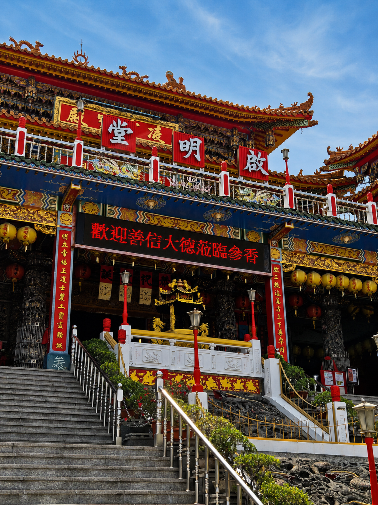
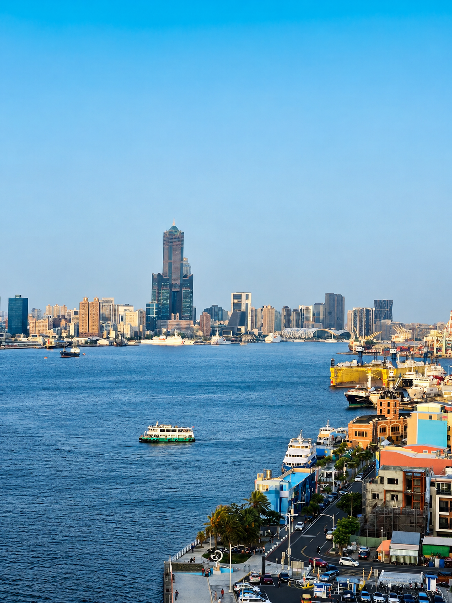

About this activity
What you will do
- Travel across Taiwan effortlessly from Taipei to Kaohsiung by high-speed rail
- Explore the serene Kaohsiung Confucian Temple and its traditional style
- Marvel at the colossal Xuantian Shangdi and the Dragon and Tiger Pagodas
- Take a short ferry ride to Cijin Island and explore its vibrant old street
- Capture panoramic views from the historic Kaohsiung Lighthouse
Full Description
Meet your guide at Taipei Main Station and board the high-speed train south to Kaohsiung. After arriving at Zuoying Station, begin your exploration with a scenic walk toward Lotus Pond, entering from its northern shore.
Your lakeside route starts at the peaceful Kaohsiung Confucius Temple, one of Taiwan’s largest Confucian temple complexes, known for its elegant traditional architecture. Continue south to the Yuandi Temple Beiji Pavilion, where a towering statue of the Taoist deity Xuantian Shangdi rises dramatically over the water. Then visit the Spring and Autumn Pavilions, famous for their colorful shrines and the statue of Guanyin riding a dragon.
Conclude your Lotus Pond walk at the iconic Dragon and Tiger Pagodas, where entering through the dragon’s mouth and exiting through the tiger’s mouth is said to bring good fortune. Along the way, enjoy time for photos and learn about the spiritual, cultural, and architectural meaning of these lakeside landmarks.
Next, walk to the nearest metro station and travel toward Kaohsiung’s harbor district. After a short walk to the ferry pier, take a brief ferry ride to Cijin Island, a historic seaside neighborhood known for its old street, seafood culture, and relaxed coastal atmosphere. Enjoy free time for lunch at your own expense before strolling by the island’s unique black sand beach.
Continue up to the historic Kaohsiung Lighthouse, one of the best places to enjoy panoramic views of the harbor, shipping port, city skyline, and coastline. Afterward, take the ferry back to the mainland and return by metro to Zuoying Station, where you will board the high-speed train back to Taipei.
This private guided day tour is designed to connect Kaohsiung’s temples, harbor culture, seaside atmosphere, and panoramic views in one smooth journey using high-speed train, metro, ferry, and walking.
Places visited or seen
Itinerary
For reference only. Itineraries are subject to change based on train schedule, weather, and local conditions.
Included
- Professional trilingual guide: English, Spanish, and Russian
- High-Speed Rail, Kaohsiung Metro, and ferry transportation during the tour
- Guided walking tour around Lotus Pond with cultural explanations
- Guided visits to Kaohsiung Confucian Temple, Beiji Pavilion, Spring and Autumn Pavilions, and Dragon and Tiger Pagodas
- Guided ferry crossing to Cijin Island and stroll along Cijin Old Street
- Scenic guided walk up to Kaohsiung Lighthouse for panoramic harbor views
Not Included
- Food and drinks during the tour
- Personal expenses, shopping, or souvenirs
- Gratuities for the guide, optional but appreciated
- Hotel pickup and drop-off
Meeting Point & Important Info
Meeting Point
We will meet at the Taipei Main Station Tourist Service Center, located on the 1st Floor near the West Gate. This central area is easy to locate and is just a short walk from the HSR boarding gates on the B1 level. Your guide will contact you via WhatsApp or Line to coordinate the meeting before the start time.
Open in Google MapsWhat to bring
- Comfortable walking shoes
- Comfortable clothes
- Sun protection
- A small umbrella in case of rain
Know before you go
- The tour begins and ends at Taipei Main Station.
- This full-day walking tour requires a moderate level of physical fitness.
- High-Speed Rail, Kaohsiung Metro, and Cijin ferry fares during the tour are included in the price.